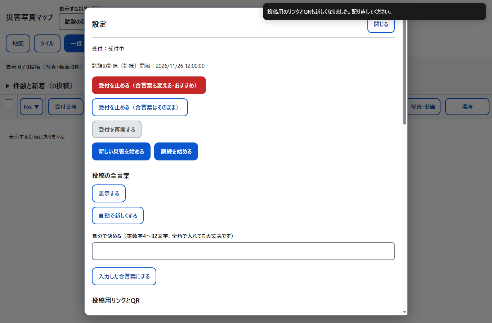

防災担当の共用Googleアカウントと、公開に使うGitHubアカウントを用意してください。写真はGoogleドライブ、記録はスプレッドシートに保存されます。
この手引きで「GAS」と呼ぶものは、Googleの「Apps Script」で動く写真受付の仕組みです。「URL」はリンク先のアドレスのことです。
1 記録用のスプレッドシートを作る
- 防災担当の共用GoogleアカウントでGoogleスプレッドシートを開きます。
- 「空白のスプレッドシート」を押します。
- 名前を「災害写真マップ_記録」に変えます。
- 「拡張機能」を押します。
- 「Apps Script」を押します。
- 左の「コード.gs」を押します。
- 最初から入っているコードをすべて選びます。
- 選んだコードを消します。
- 配布フォルダの
gas/Code.gs をUTF-8で開きます。
- ファイルの中身をすべてコピーします。
- Apps Scriptの「コード.gs」に貼り付けます。
- 「プロジェクトを保存」を押します。
貼り付けたコードの最後に var SPM_CODE_END = '1.1.0'; があることを確認してください。
エディタの「実行」ボタンは使いません。スプレッドシートを開き直し、上のメニュー「災害写真マップ」→「①最初の設定」から操作してください。
2 最初の設定と許可をする
- スプレッドシートの画面に戻ります。
- ブラウザの「再読み込み」を押します。
- 上の「災害写真マップ」を押します。
- 「①最初の設定」を押します。
- 承認を求められたら「続行」を押します。
- 防災担当の共用Googleアカウントを選びます。
- 「このアプリは Google で確認されていません」と出た場合は「詳細」を押します。
- 同じ画面に出た「（プロジェクト名）（安全ではないページ）に移動」を押します。
- 求められた権限を確認して「許可」を押します。
- 設定画面が出ない場合は、もう一度「①最初の設定」を押します。
- 地図の中心の入力欄に、役場などの緯度と経度を貼ります。
- 「地図の中心を保存する」を押します。
- 表示された合言葉を所定の保管場所に控えます。
- 表示された管理画面のパスワードを所定の保管場所に控えます。
確認されていないという表示は、自分で貼り付けたコードを初めて動かすために出ます。自分がこの手順で作ったプロジェクトであることを確認して進めます。合言葉とパスワードは、人に見せたりGitHubに載せたりしないでください。
地図の中心は空のままでも使えます。初回の設定画面で、地図の中心を保存せず閉じてもかまいません。「設定済みです」と出るときは、今ある設定が使われます。
3 GASをウェブアプリとして公開する
- Apps Scriptの画面に戻ります。
- 「デプロイ」を押します。
- 「新しいデプロイ」を押します。
- 「種類の選択」の歯車を押します。
- 「ウェブアプリ」を選びます。
- 「次のユーザーとして実行」を「自分」にします。
- 「アクセスできるユーザー」を「全員」にします。
- 「デプロイ」を押します。
- 出てきたウェブアプリのURLをコピーします。
使うURLは末尾が /exec のものです。/dev のURLは使いません。「全員」を選べない場合は、町のGoogleアカウント管理担当に確認してください。
4 投稿ページの公開先を準備する
- 配布フォルダの
docs/config.js をUTF-8で開きます。
gasUrl: '' の2つの引用符の間に、コピーしたURLを貼り付けます。docs/config.js を保存します。- GitHubで公開用のリポジトリを開きます。
- 「Add file」を押します。
- 「Upload files」を押します。
- 配布物の
docs・gas・tests・tools・手引き と README.md を追加します。
- 「Commit changes」を押します。
- リポジトリの「Settings」を押します。
- 左の「Pages」を押します。
- 「Source」で「Deploy from a branch」を選びます。
- 「Branch」で「main」を選びます。
- 公開フォルダで「/docs」を選びます。
- 「Save」を押します。
控えた秘密のメモ（合言葉・パスワード）はアップロードしません。docs/vendor・docs/icons と、隠しファイルの docs/.nojekyll も含めてください。ファイル名の大文字・小文字は変えません。
5 管理画面で試しに使う
- 公開の完了を数分待ちます。
- 「Pages」に表示された公開先を開きます。
- アドレスの末尾を
/admin.html にして開きます。
- 管理画面のパスワードを入れます。
- 「ログイン」を押します。
- 地図を役場などの位置に動かします。
- 地図の拡大を町の範囲に合わせます。
- 「設定」を押します。
- 「いまの地図の表示を初期位置にする」を押します。
- 「実行する」を押します。
- 「訓練を始める」を押します。
- 訓練の名前を入れます。
- 「この名前で始める」を押します。
- 「実行する」を押します。
- 投稿用のQRをスマホで読みます。
- 写真を1枚、試しに送ります。
- 03 実機の確認表で使う端末を確かめます。

設定画面。投稿用リンクとQRはここから配ります。
6 コードを直したとき
- Apps Scriptの「コード.gs」を新しい
gas/Code.gs の中身にすべて貼り替えます。
- 「プロジェクトを保存」を押します。
- 「デプロイ」を押します。
- 「デプロイを管理」を押します。
- 使っているデプロイを選びます。
- 鉛筆の「編集」を押します。
- 「バージョン」で「新しいバージョン」を選びます。
- 「デプロイ」を押します。
- GitHubの
docs を同じ配布版のファイルに更新します。
- 管理画面の「↻ 全部読み直す」を押します。
この方法ではウェブアプリのURLは変わりません。「新しいデプロイ」を作ると別のURLになります。誤って新しく作ったときは、使うURLと config.js が一致しているか確認してください。
1.1.0に上げるとき
上の手順で gas/Code.gs の全体を貼り替え、保存した後に「デプロイを管理」→ 鉛筆の「編集」→「新しいバージョン」で公開します。保存だけでは、受付に使うコードは変わりません。URLは変わりません。投稿・管理ページの docs も1.1.0の配布物へ更新してください。新しい docs/js/video.js も含めます。
初めて動画を送ると許可の画面が出ることがあります。防災担当の共用Googleアカウントで、求められたGoogleドライブなどの権限を確認して許可してください。許可を終えたら、投稿ページの送信待ちから送り直します。
7 庁内PCで公開ページが開けない場合
docs フォルダを丸ごとPCに写します。- 写した
config.js の gasUrl に公開したGASのURLを入れます。
- 写した
admin.html をダブルクリックします。
- 管理画面のパスワードを入れます。
- 「ログイン」を押して管理画面に入ります。
- 「設定」の「投稿ページのURL」に、GitHub Pagesで公開した投稿ページのURLを入れます。
- 「投稿ページのURLを保存」を押します。
GASと地図の通信ができるPCで使えます。管理画面のファイルだけを開ける方法です。スマホへの投稿用リンクは、公開されたHTTPSの投稿ページを使います。